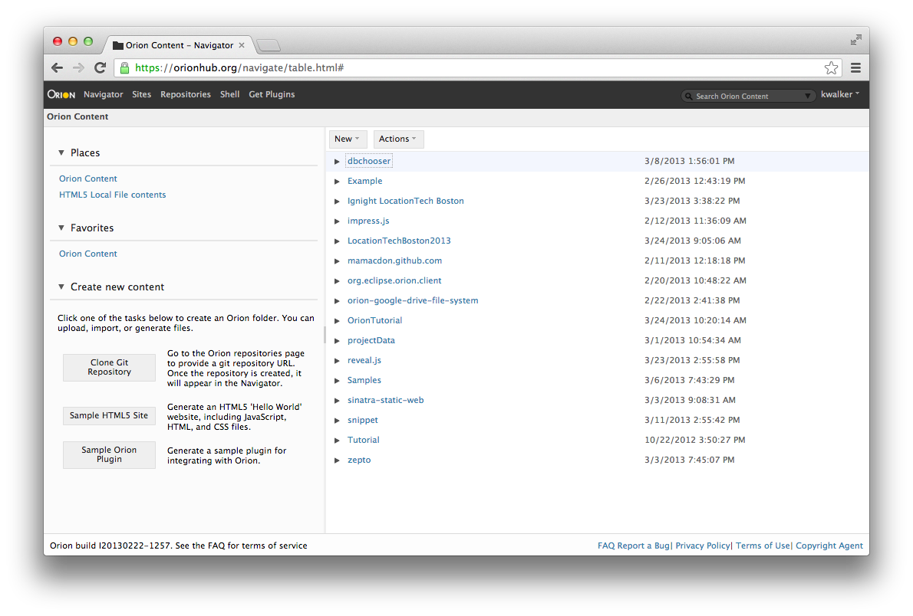
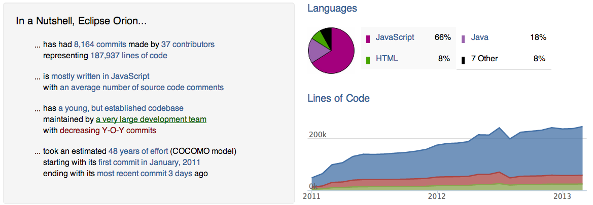

The Orion Project
A brief walkthrough in 5 minutes
Ignite LocationTech Boston - March 25, 2013

Ken Walker / @kwalker / kenwalker on GitHub
Orion Lead and Orion Dev Lead at IBM Canada
Clone this talk into OrionHub.org from GitHub
What is the purpose of Orion?
Open Source Platform for Cloud Based Development
All open source
At Eclipse and mirrored at GitHub
Orion Wiki Page
Focus on...
- Embracing modern browser capabilities
- A platform that’s extensible
- Components that are consumable
- Cross-site workflows & integration
- A tool suite that does what is needed
Orion Pages and Plugins
- Orion provides many pages by default
- Provides necessary functionality for developers
- Go from creating, editing, self hosting to deployment and source code control
- Extensibility is what sets Orion apart
How we achieve plugability
A JSBeautify Orion Plugin
example snippets of Orion parts
// plugin.html has:
...
<head>
<script type="text/javascript" src="plugin.js"></script>
<script type="text/javascript" src="jsbeautify.js"></script>
// jsbeautify.js has:
...
provider.registerServiceProvider(["orion.edit.command", "orion.cm.managedservice"], {
updated: function(properties) {
run: function(selectedText, text, selection) {
var toFormat;
var selectionEmpty = selection.start === selection.end;
if (selectionEmpty) {
toFormat = text;
What's your point, Ken?
Plugins can extend the functionality of Orion in the Browser dynamically, without any Server side changes. The plugins themselves can come from any site, not just the server Orion is hosted from.
Put it all together...
All the HTML5, CSS3, JavaScript, plugins...
You get a development platform
Orion Navigator
Orion Editor
Orion Git Repositories
Orion Git Status with Compare
Works on mobile tablets
While Orion works on phones it is better suited to tablets. Adding a bluetooth keyboard is even better
iPad mini and a Nexus 7
Install your own Orion Server
- Go to the Orion Downloads page
- Get the right server and unzip it
- Run the Orion executable, make an account, done!
- Now look at the Server Admin Guide
- Look at the Getting Started Guild
Got Node.js?
npm install orion
edit orion.conf to set a workspace directory
workspace=/home/pi/Workspace/
Orion shell commands available for Node and npm
You can consume Orion too
Many components of Orion are meant to be individually consumable
Leverage our work for your project and if you have suggestions or changes, contribute them back.
Orion Deferred, Orion HTML Templates Shim, Orion URI Templates, Orion URL Shim, Orion Plugin Registry, Orion Service Registry, Orion XHR Implementation, Orion Node Deferred File System
Minified Client Side Editor - Just the editor
function Deferred() {
var result, state, listeners = [],
_this = this;
function notify() {
var listener;
while ((listener = listeners.shift())) {
var deferred = listener.deferred;
var methodName = state === "resolved" ? "resolve" : "reject"; //$NON-NLS-0$ //$NON-NLS-1$ //$NON-NLS-2$
if (typeof listener[methodName] === "function") { //$NON-NLS-0$
try {
var listenerResult = listener[methodName](result);
if (listenerResult && typeof listenerResult.then === "function") { //$NON-NLS-0$
deferred.cancel = listenerResult.cancel || noop;
listenerResult.then(noReturn(deferred.resolve), noReturn(deferred.reject), deferred.progress);
} else {
deferred.resolve(listenerResult);
}
} catch (e) {
deferred.reject(e);
}
} else {
deferred[methodName](result);
}
}
}
If you want to generate a Snippet of code for a Blog or Web Post
Check out the Snippet Orion Plugin
Client side compare
Complete JavaScript client side compare both inline and unified views.
Community
Orion is developed by contributors from IBM, VMWare, Mozilla, Google, HP, individuals (students), YOU!
What can we do this year?
IBM Research and University Collaboration on Content Assist, OSLC integations, Server Extensions for CloudFoundry VMC, We need more deployment plugins
Warsaw University project on a JSGit implementation for Node.js, Accessibility, Translations and NLS, File System plugins (Chrome, HTML5, WebDav, S3, etc.)
Embedded development using Orion on Node (Lua, Node, Scripting) - the Orion Shell is extensible
Find out more
Read our blog at Planet Orion
Check out the Orion BUZZ
Lots of information in the Orion Wiki
Follow Orion on Twitter
Create an account and try it at OrionHub
Ken Walker / @kwalker / kenwalker on GitHub
Orion Lead and Orion Dev Lead at IBM Canada
Clone this talk into OrionHub.org from GitHub